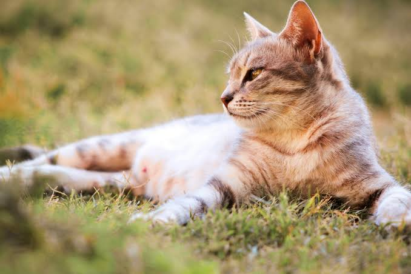

The world of cats.mur

Коты давно стали неотъемлемой частью жизни человека. Но насколько много мы знаем о своих домашних любимцах?
На этом сайте вы сможете узнать об истории кошек, разных породах, их поведении, уходе и интересных фактах.
Выбрать раздел
Выберите интересующую вас тему.
Узнайте, как кошки начали жить рядом с человеком и как менялось отношение к ним.
Читать далееПознакомьтесь с разными породами кошек, их внешностью и особенностями характера.
Читать далееУзнайте, почему кошки мурлыкают, играют, спят и ведут себя по-разному.
Читать далееОткройте для себя необычные способности и интересные особенности кошек.
Читать далее